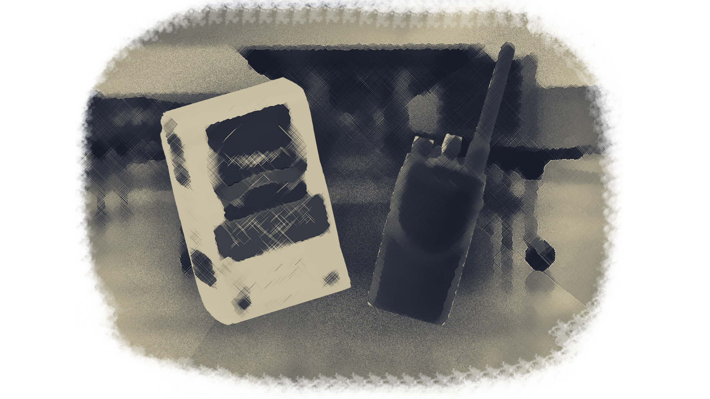

You find yourself under a table now, ducking for cover. You look down and find a walkie talkie and a bag of flour. You must choose quickly! Ms. Jackall is getting angrier and angrier, and more and more lunch trays are getting thrown!
Do you...
Pick up the bag of flour
or
Pick up the walkie talkie

Quit Game